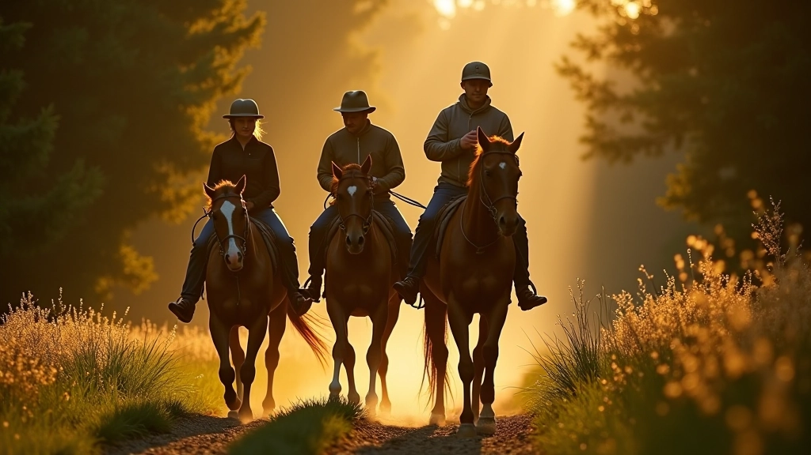
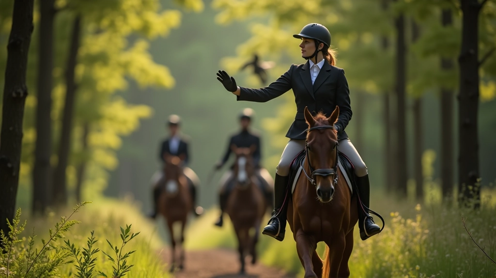
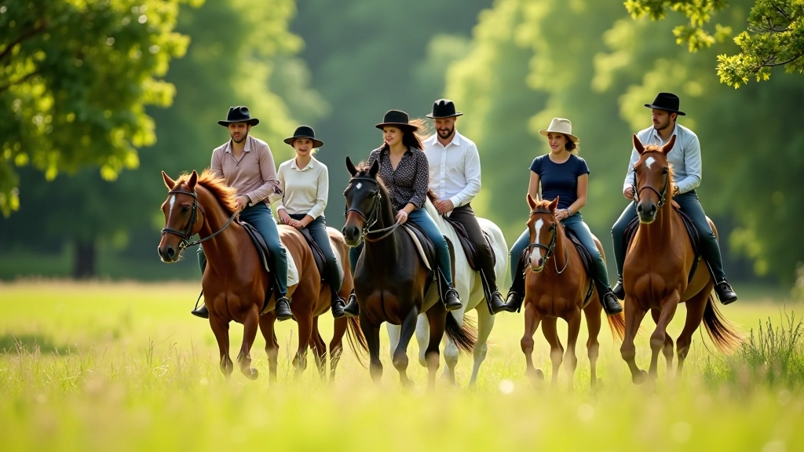

فهم أساسيات الركوب الآمن مع المجموعات
الركوب مع مجموعة ليس مثل الركوب بمفردك. هناك ديناميكيات مختلفة تماماً — حصان بجانبك قد يشعر بالقلق، أو يصبح حريصاً جداً على اللحاق بالآخرين. المفتاح هو الفهم المتبادل والاحترام بين جميع الفرسان.
تبدأ السلامة قبل الانطلاق. كل فارس مسؤول عن معرفة مستوى خبرة حصانه، ومزاجه، وكيفية تفاعله مع الخيول الأخرى. لا تتوقع من الحصان أن يتكيف مع موقف لم يختبره من قبل. الخيول الشابة والخيول العصبية تحتاج إلى وقت أطول للاعتياد على ركوب جماعي.
ثلاث قواعد أساسية قبل البداية
- تحقق من صحة حصانك وجهازه — لا حزام مرتخ أو حبل مكسور
- تواصل مع قائد المجموعة عن مستوى حصانك وأي قلق خاص
- ارتد معدات الحماية الكاملة — الخوذة إلزامية دائماً
المسافات والتباعد بين الخيول
المسافة بين الخيول ليست مسألة تفضيل شخصي — إنها مسألة سلامة. إذا كان حصانك قريباً جداً من الخيل أمامك، قد يصاب بالذعر إذا توقف الحصان الأمامي فجأة. أيضاً، الخيول التي تشعر بالضغط من الخيل خلفها قد تركل.
المسافة الآمنة هي طول حصان واحد على الأقل — تقريباً من 2 إلى 2.5 متر. هذا يعطي الحصان الأمامي مساحة للتحرك أو التوقف بدون اصطدام. عندما تركب على طريق ضيق أو في غابة كثيفة، قد تحتاج إلى مسافة أكبر قليلاً. لا تحاول أبداً الركوب جنباً إلى جنب على طريق ضيق — هذا خطير جداً.
ترتيب المجموعة والقيادة
القائد يذهب أولاً — عادة فارس ذو خبرة يعرف الطريق. الخيول الهادئة والمطيعة تركب خلف القائد مباشرة. الخيول الأكثر عصبية أو التي لا تعرف بعضها البعض يجب أن تركب في الوسط. الفارس الأكثر خبرة يركب في النهاية لمراقبة الجميع والتأكد من أن الجميع بخير.
لا تحاول أبداً تجاوز خيل آخر دون طلب الإذن. قل "على اليسار" أو "على اليمين" وانتظر الموافقة. الفارس الآخر قد يكون لديه حصان متقلب لا يحب المفاجآت. حتى على طريق واسع، الاحترام المتبادل يحفظ الجميع آمنين.

التواصل والإشارات المهمة
التواصل الجيد يمنع الحوادث. بعض الإشارات واضحة — رفع اليد تعني توقف. لكن هناك تفاصيل أخرى أكثر دقة. عندما تبطئ الخيل أمامك، تحضر نفسك. عندما ترى قائد المجموعة يقف في حصانه، كن مستعداً للتوقف أو التحول.
استخدم صوتك بحكمة. بدلاً من الصراخ، تحدث بوضوح وهدوء. "خيل بالأمام" تحذير مهم إذا رأيت خطراً. "توقف" واضحة جداً. تجنب الضوضاء المفاجئة التي قد تفزع الحصان. بعض الفرسان يستخدمون أجراس صغيرة على الطريق — هذا يساعد الحيوانات الأخرى أن تعرف أن هناك خيول قادمة.

قراءة لغة جسد الحصان
تعلم قراءة الإشارات المبكرة للقلق. إذا رأيت أن الحصان أمامك بدأ آذانه تتحرك للخلف، أو أن رقبته أصبحت متيقظة، هناك شيء ما يزعجه. قد يكون حيواناً برياً أو مجرد ظل غريب. أخفض سرعتك وكن مستعداً. حصان قلق قد يتفادى أو يرتمي للخلف، وتريد أن تكون جاهزاً لهذا.
الذيل المشدود يعني حصان قلق. آذان مرتاحة للأمام تعني حصان مهتم وهادئ. عندما تركب، راقب باستمرار حصان المجموعة أمامك. إذا كنت قادراً على التنبؤ بردود أفعاله، يمكنك تجنب الكثير من المشاكل قبل أن تبدأ.
الحفاظ على صحة حصانك أثناء الركوب الجماعي
ركوب الحصان مع مجموعة يمكن أن يكون متعباً أكثر من الركوب بمفردك. حصانك قد يحاول اللحاق بالمجموعة، أو قد يصبح عصبياً من الخيول القريبة. يجب أن تراقب علامات الإرهاق — التنفس الثقيل، العرق المفرط، أو عدم الاستجابة للإشارات.
خذ فترات راحة منتظمة. كل 30 إلى 45 دقيقة، توقفت المجموعة وأعطي الخيول فرصة للشرب والراحة. لا تترك حصانك يشرب بسرعة كبيرة جداً — دعه يشرب ببطء. تحقق من حوافر حصانك للبحث عن الحجارة أو التأثر.
نصائح لرعاية حصانك
الترطيب
احمل ماء كافي. قدم الماء بانتظام، خاصة في الأيام الدافئة. لا تعتمد على مجاري الماء الطبيعية وحدها — قد لا تكون آمنة للشرب.
مراقبة التنفس
حصان سليم يجب أن يعود تنفسه إلى طبيعته خلال 10-15 دقيقة من الراحة. إذا ظل يتنفس بثقل، قد يكون متعباً جداً.
فحص العرق
عرق خفيف طبيعي. عرق مفرط جداً قد يعني أن الحصان قلق جداً أو متعب جداً. لا تستمر إذا رأيت هذا.
الحوافر والأحذية
تحقق من الأحذية قبل البداية وبعد الراحة. حذاء مفكوك أو حافر مشروخ قد يجعل حصانك عرج.
احترام بيئة الركوب والآخرين
الركوب الجماعي مسؤولية تجاه البيئة والفرسان الآخرين. البقاء على الطريق المحدد — لا تقطع العشب أو الأشجار. الخيول تترك أثراً على الأرض، والركوب بطريقة متهورة يمكن أن يدمر المسارات للآخرين.
احترم الملكية الخاصة. إذا كنت تركب على أرض خاصة بإذن، لا تتركها. أغلق البوابات خلفك. نظف بعدك — لا تترك أكياس الطعام أو الفضلات. الفرسان الآخرون سيقدرون هذا، والمالكون سيسمحون بالركوب المستقبلي.
ديناميات المجموعة والاحترام المتبادل
كل فارس في المجموعة لديه مستوى خبرة مختلف. لا تسخر من الفرسان الجدد أو الأقل خبرة. الجميع كانوا مبتدئين مرة واحدة. إذا رأيت أحداً يعاني، قدم المساعدة بأدب — "هل تحتاج إلى أي شيء؟" أو "هل حصانك بخير؟"
لا تسرع أمام المجموعة بدون سبب. إذا كنت تريد تسريع السرعة، اطلب من القائد أولاً. لا تتوقف فجأة بدون تحذير. كل شيء تفعله يؤثر على الحصان خلفك. الركوب الآمن هو ركوب مسؤول — وهذا يعني التفكير بالآخرين دائماً.

الخلاصة والنقاط الأساسية
الركوب الجماعي ممتع وآمن عندما يكون الجميع على نفس الصفحة. تبدأ السلامة بالتحضير — تفتيش حصانك وجهازك، والتواصل مع المجموعة عن أي قلق. المسافات الصحيحة والتواصل الواضح والاحترام المتبادل هي الأساس.
تذكر أن حصانك يعتمد عليك للحفاظ على سلامته. كل قرار تتخذه يؤثر على حصانك والفرسان الآخرين والبيئة. الركوب الجماعي الحقيقي هو توازن بين المتعة والمسؤولية. عندما تحصل عليه بشكل صحيح، لا شيء يضاهي شعور المجموعة تركب معاً بثقة وأمان.
تنبيه مهم
اختر أنشطة ركوب تتناسب مع مستوى خبرتك وخبرة حصانك. تحقق من ظروف الطريق والطقس قبل الخروج، واستشر طبيباً بيطرياً إذا كان لديك قلق حول صحة حصانك. الركوب الآمن يتطلب مسؤولية شخصية واستعداداً جيداً.